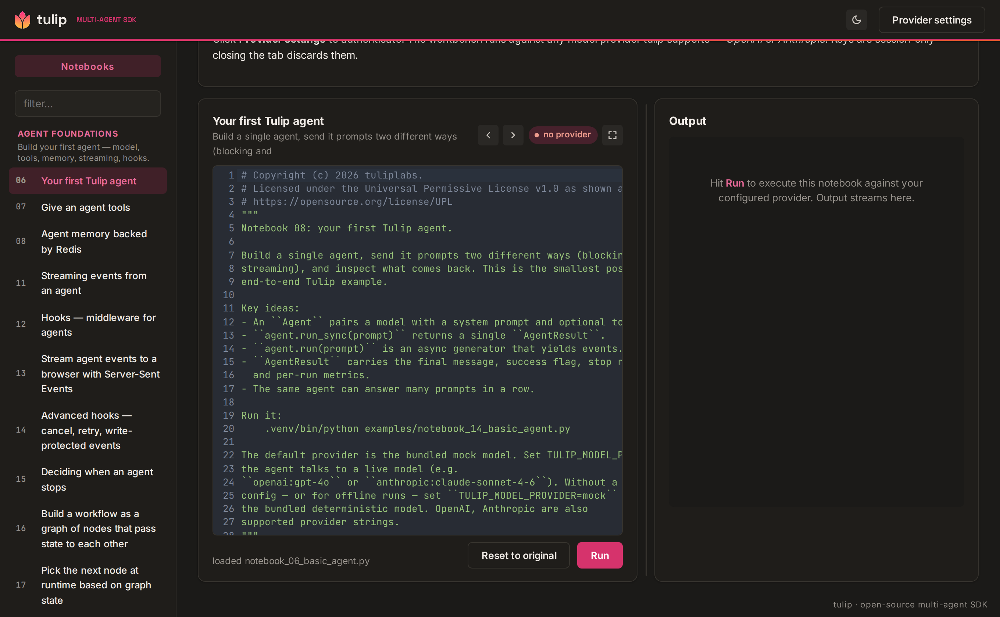

Open source · Apache-2.0
Tulip
The open-source control layer for agents that act — move money, delete a resource, disable an account, isolate a host. Add it to the agent you already have, on any framework (LangChain, CrewAI, the OpenAI Agents SDK), and every risky step is policy-gated, human-approvable, and recorded in a tamper-evident audit trail. Trick the model all you want — the action still has to clear the gate before it runs. Proven first in security.
pip install tulip-agents
Drop the gate around an action your agent already takes
from tulip.control import Action, admit, ControlPolicy, AuditTrail, AdmissionError policy = ControlPolicy() # prod → human trail = AuditTrail() # the model decided to refund a customer risky = Action(name="refund", asset="cust:4821", blast_radius=1, kind="payment", environment="production") try: await admit(risky, lambda: refund("cust:4821"), policy=policy, trail=trail) except AdmissionError as e: print(e.decision.outcome) # → "require_human"; refund NOT run # Held for a human, on a tamper-evident record you can replay.
A frontier model is smart. The one thing it can't do — no matter how smart — is prove it won't take a catastrophic action. Tulip closes that gap: a side-effecting action runs only after it clears the admission gate — policy, risk, and approval — and a bare model reaching for something dangerous is blocked before it runs. Jailbreak the model all you want — the gate, not the prompt, decides what executes.
And nothing is un-recorded: every decision and action is a hash-chained event you can replay, tamper-evident against a trusted head hash. Findings still carry the evidence behind them (GSAR grounding) and abstentions stay explicit — but the core is control: the same Agent class scales from a five-line script to a multi-agent SOC, auditable the whole way.
Can you make the agent go rogue? Three runnable demos ship in examples/ — a jailbreak-the-agent challenge (breaches: 0), a governed SOC action (gate → hold-for-human → tamper-evident audit), and an honest grounding ablation.
Findings backed by evidence
A security finding is admitted only when its evidence clears the GSAR threshold; below the bar it abstains, with an audit trail. Tagged to MITRE ATLAS / OWASP, ready for a SIEM.
Read-only by construction
The cloud-posture auditor literally can't write — its tools admit only describe/list/get calls, with the IAM identity as the backstop. Pair guardrails and a model-judge on every tool call.
Eight shapes, one class
Single agent, pipelines, loops, orchestrator + specialists, swarm, hand-off, and cross-process A2A — composed from the task, not hand-wired.
Typed event stream
An opt-in event bus surfaces 40+ canonical events from every layer through one context — no external broker — with an OpenTelemetry hook when you want it.
Pause & resume
Idempotent tools so a risky action never fires twice; checkpoint to Redis, Postgres, or S3; interrupt for human approval and resume exactly where it stopped.
Provider-agnostic
OpenAI, Anthropic, self-hosted vLLM, or any OpenAI-compatible endpoint via base_url. RAG, MCP client + server, and a FastAPI agent server included — plus vendor security integrations (SIEM, EDR, identity, threat-intel) in the companion tulip-integrations package.
Try it in the browser
The Workbench
A self-contained playground for every Tulip pattern — vanilla-TS UI, a thin Node proxy, and the SDK runner behind it. Bring your own provider key and watch a multi-agent run emit its event stream live. Run it on localhost in three terminals, or as a single Docker container.

Tulip is released under the Apache License 2.0 — a real patent grant, and the standard every legal team already recognizes. It began as a fork of an earlier project released under the Universal Permissive License v1.0; those original portions remain available under the UPL, and all new work is Apache-2.0. The NOTICE file records the lineage in full.